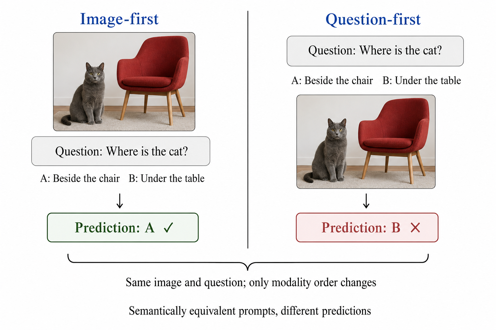
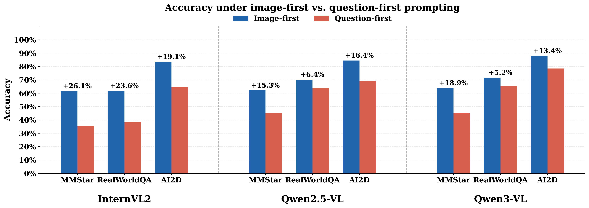
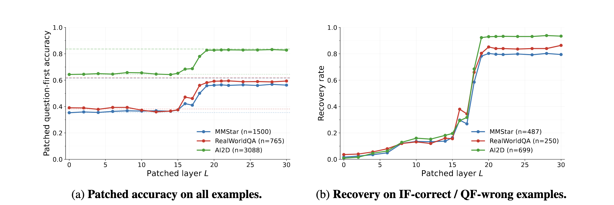
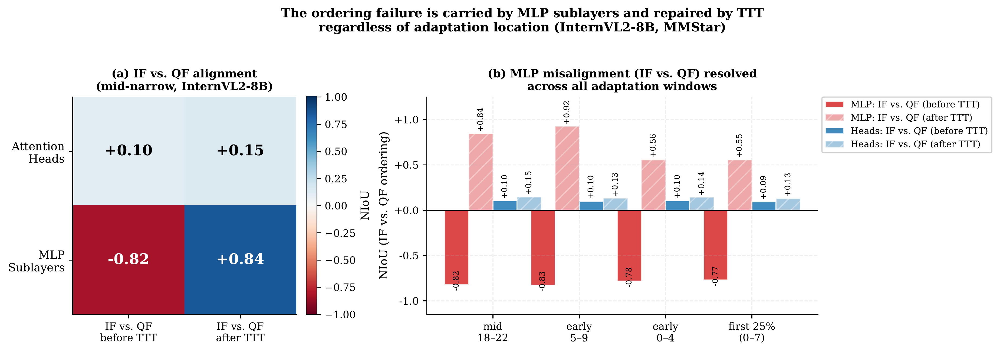
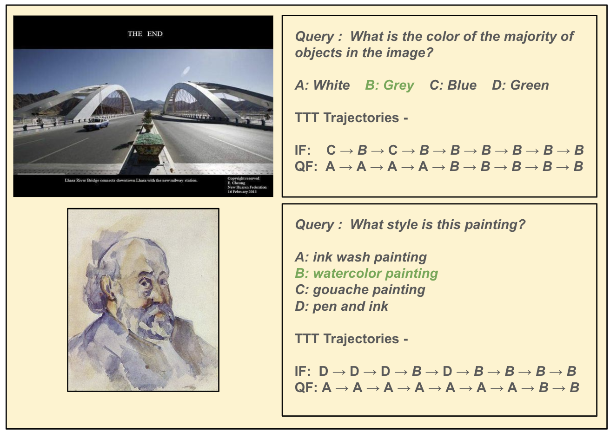
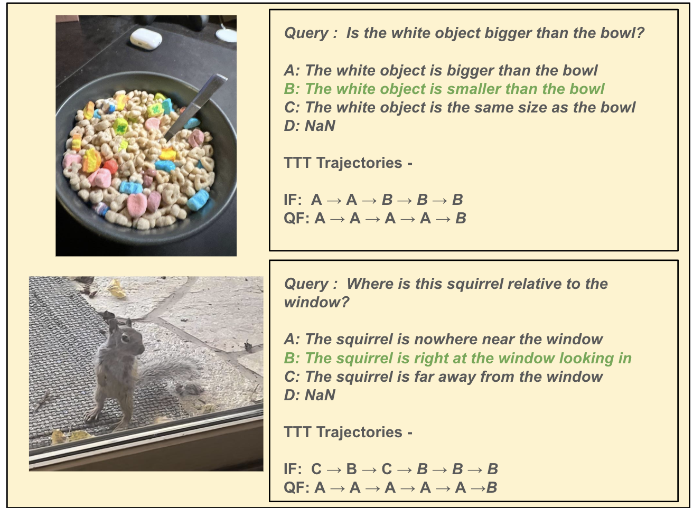

The image and question are identical in both prompts. Only their order changes—yet the model's prediction changes with it.
Abstract
Vision-language models are typically evaluated with the image placed before the question, although nothing about the task requires that order. We show that simply swapping the two— presenting the question before the image—produces a large and consistent accuracy drop across models and benchmarks, despite preserving the semantic content of the prompt.
Using activation patching, we localize this failure to a narrow mid-network layer band. Motivated by this localization, we introduce a KL-aligned test-time training objective that aligns the weaker ordering with the stronger one using no labels, architectural changes, or additional offline training.
A consistent gap across models and benchmarks
Question-first prompting lowers accuracy on every evaluated model–benchmark pair, with gaps ranging from approximately 5 to 26 percentage points.

Image-first prompting consistently outperforms question-first prompting across InternVL2, Qwen2.5-VL, and Qwen3-VL.
The failure localizes to a narrow mid-network band
We patch image-first hidden states into the question-first forward pass one layer at a time and measure recovery of the stronger ordering's behavior.

Patching has little effect in early layers, followed by a sharp recovery within a narrow mid-network region.
Test-time training repairs internal misalignment
The two modality orderings are strongly misaligned in MLP sublayers before adaptation; test-time training shifts them toward agreement.

Qualitative test-time trajectories
Across adaptation steps, question-first predictions move toward the correct answer while image-first behavior remains stable.


BibTeX
The paper link and final citation will be updated when the preprint is released.
@article{gupta2026modality,
title = {Test-Time Training for Modality Order Consistency in Vision-Language Models},
author = {Gupta, Aditi and Gandelsman, Yossi},
year = {2026},
note = {Preprint forthcoming}
}